الدليل الشامل لمكافحة جميع أنواع الحشرات والقوارض في الرياض
تُعد مكافحة الحشرات بالرياض من الخدمات الأساسية التي تحتاج إليها المنازل، والفلل، والشركات، والمطاعم، والفنادق، والمدارس، والمستشفيات، والمستودعات، وجميع أنواع المنشآت في مدينة الرياض. فمع ارتفاع درجات الحرارة وطبيعة المناخ، تصبح الحشرات والقوارض من أكثر المشكلات التي تواجه السكان وأصحاب الأعمال.
تقدم براقيو خدمات مكافحة حشرات احترافية في الرياض منذ سنوات طويلة، معتمدة على خبرة تمتد لأكثر من 15 عامًا في مجال مكافحة الآفات والقوارض، باستخدام أحدث المعدات والتقنيات والمبيدات الآمنة والمعتمدة. نغطي جميع أحياء مدينة الرياض مع خطط مكافحة مرنة تناسب احتياجات المنازل والمنشآت التجارية.
تتميز مدينة الرياض بمناخ صحراوي ترتفع فيه درجات الحرارة خلال أشهر الصيف، وتنتشر فيه العواصف الترابية، مما يخلق بيئة مثالية لتكاثر العديد من أنواع الحشرات والقوارض. كما أن طبيعة الحياة في الرياض، مع كثرة المطاعم والمقاهي والمجمعات التجارية، توفر مصادر غذاء وفيرة للحشرات، مما يزيد من معدل تكاثرها وانتشارها.
أكثر أنواع الحشرات والقوارض انتشارًا في الرياض: الصراصير، النمل، بق الفراش، البعوض، الذباب، الفئران، العث، السحالي، الثعابين، النمل الأبيض، البراغيث، القراد، الدبابير.
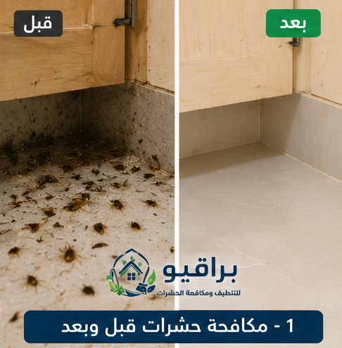
قبل وبعد المكافحة
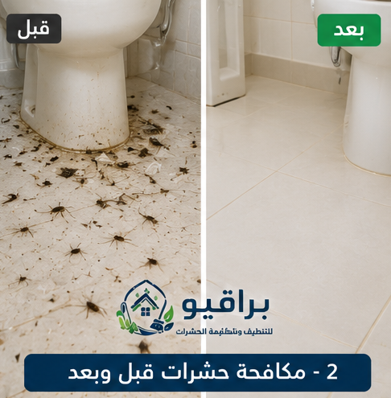
قبل وبعد المكافحة
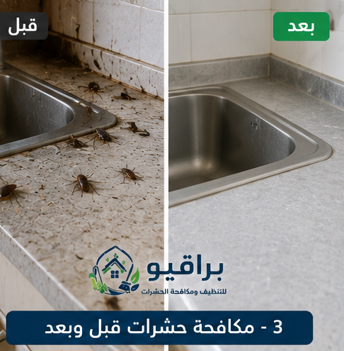
قبل وبعد المكافحة
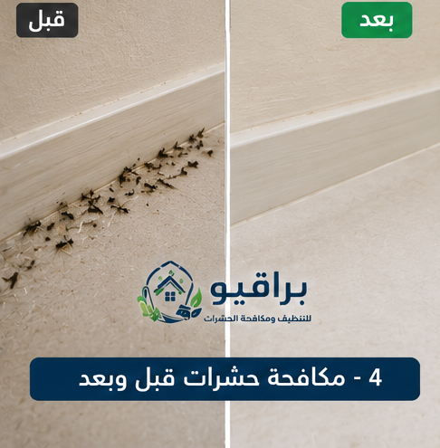
قبل وبعد المكافحة
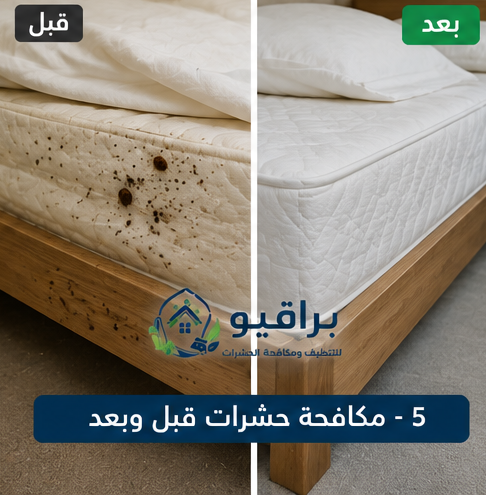
قبل وبعد المكافحة
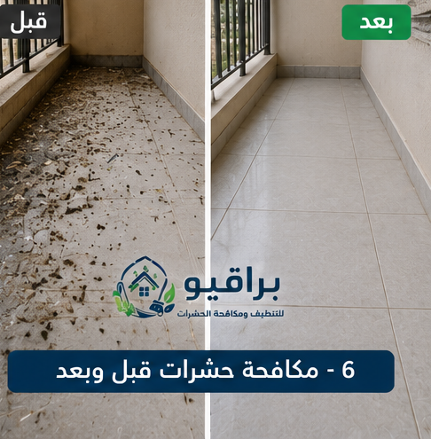
قبل وبعد المكافحة
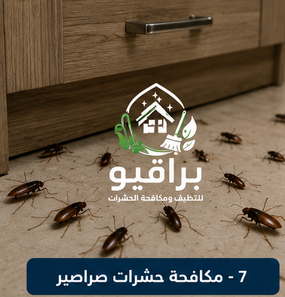
مكافحة الصراصير
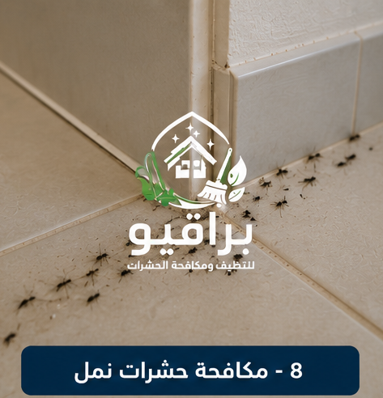
مكافحة النمل
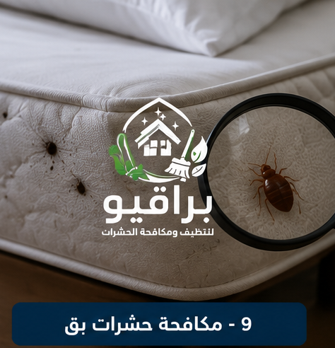
مكافحة بق الفراش
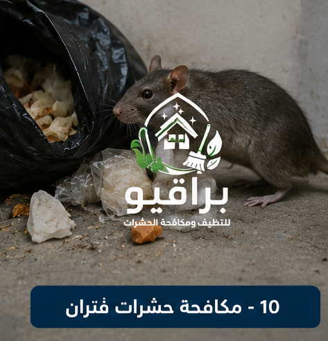
مكافحة الفئران
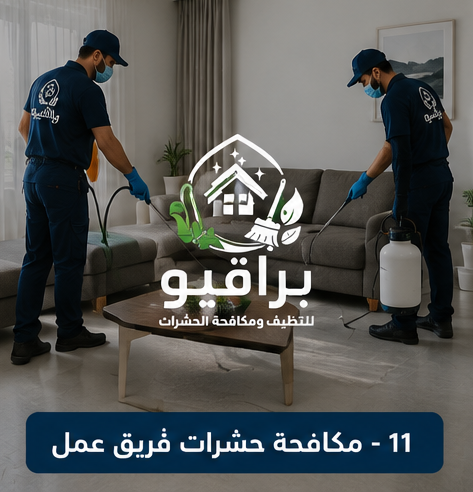
فريق العمل
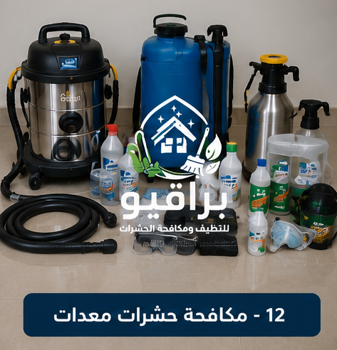
المعدات
مكافحة الحشرات ليست مجرد رفاهية، بل هي ضرورة للحفاظ على صحة الأسرة وسلامة الممتلكات. فالحشرات لا تقتصر أضرارها على الإزعاج فقط، بل تمتد إلى: نقل الأمراض والبكتيريا، تلف الأثاث والمفروشات، تلويث الأطعمة والمشروبات، التسبب في الحساسية الجلدية والتنفسية، إتلاف الأخشاب والهياكل الإنشائية، التأثير على سمعة المنشآت التجارية والمطاعم والفنادق، التسبب في خسائر اقتصادية.
تُعد الصراصير من أكثر الحشرات انتشارًا في مدينة الرياض، وتتواجد بكثرة في المطابخ، والحمامات، والمجاري، والمخازن، والمطاعم. وهي من الحشرات سريعة التكاثر. أنواع الصراصير الشائعة: الصرصور الألماني، الصرصور الأمريكي، الصرصور الشرقي. أضرار الصراصير: نقل البكتيريا والجراثيم، تلويث الأسطح والأطعمة، إثارة الحساسية والربو، ترك رائحة كريهة. طرق مكافحة الصراصير في براقيو: الرش المباشر بالمبيدات الألمانية والأمريكية المتخصصة، استخدام الجل القاتل، معالجة الشقوق والفجوات، رش المجاري والبالوعات، المكافحة الوقائية الدورية.
ينتشر النمل في الرياض بشكل كبير، خاصة في فصلي الربيع والصيف. أنواع النمل الشائعة: النمل الأسود المنزلي، النمل الأبيض، النمل الناري، النمل الفرعوني. طرق مكافحة النمل في براقيو: رش المبيدات المخصصة، استخدام الطعوم الجاذبة، معالجة مداخل النمل، سد الفتحات والشقوق، المكافحة الوقائية الموسمية.
بق الفراش من الحشرات المزعجة التي تنتشر في غرف النوم، والمراتب، والأثاث المنجد، والستائر، وتتغذى على دم الإنسان. علامات وجوده: بقع دم صغيرة على أغطية السرير، نقاط سوداء على المرتبة، رائحة عفنة، لدغات حمراء على الجلد. طرق مكافحة بق الفراش في براقيو: الرش بالمبيدات المتخصصة، المعالجة بالبخار الحراري، تنظيف المفروشات والمراتب، زيارات متابعة للتأكد من القضاء التام.
تنتشر الفئران في المستودعات، والمخازن، والمطاعم، والمجاري، والمنازل القريبة من الأراضي الفضاء. أضرارها: إتلاف الأثاث والأسلاك الكهربائية، تلويث الطعام، نقل الأمراض، إزعاج السكان. طرق مكافحة الفئران في براقيو: استخدام المصائد الميكانيكية، استخدام الطعوم السامة بحذر، سد الفتحات والمداخل، تنظيف المناطق المحيطة، المكافحة الوقائية الدورية.
ينتشر البعوض في الرياض خاصة في المناطق القريبة من المزارع والمسطحات المائية. أضرار البعوض: نقل الأمراض، الحكة والحساسية. أضرار الذباب: نقل البكتيريا والجراثيم، إزعاج الزبائن في المطاعم. طرق المكافحة في براقيو: رش المبيدات في المناطق المفتوحة، تركيب مصائد حشرية كهربائية، معالجة برك المياه الراكدة، تنظيف الحدائق، تركيب شبكات على النوافذ.
يُعد النمل الأبيض من أخطر أنواع الحشرات التي تهدد المباني في الرياض، حيث يتغذى على الأخشاب والمواد السليلوزية. علامات وجوده: أنابيب طينية على الجدران، أخشاب مجوفة، تشققات في الجدران، أجنحة متساقطة. طرق مكافحة النمل الأبيض في براقيو: حقن التربة بالمبيدات المتخصصة، استخدام الطعوم الجاذبة، معالجة الأخشاب المصابة، إنشاء حواجز كيميائية، الكشف الدوري. نقدم ضمان يصل إلى 10 سنوات.
في براقيو نستخدم مبيدات معتمدة من هيئة الغذاء والدواء ووزارة الصحة. أنواع المبيدات: سائلة (للرش المباشر)، جل (للصراصير والنمل)، بودرة (للشقوق والفتحات)، طعوم سامة (للفئران)، مبيدات بخاخ، مبيدات حقن (للنمل الأبيض).
المكافحة المنزلية تعتمد على مبيدات تجارية قد تكون أقل فعالية. أما المكافحة الاحترافية فتعتمد على: فنيين مدربين، مبيدات مركزة ومعتمدة، معدات رش متطورة، خطة مكافحة شاملة، متابعة دورية وضمان.
1. المعاينة: فحص شامل للموقع.
2. وضع الخطة: اختيار طريقة المكافحة المناسبة.
3. التنفيذ: تنفيذ عملية المكافحة وفق أعلى معايير السلامة.
4. المتابعة: زيارة متابعة للتأكد من فعالية المكافحة.
5. الوقاية: تقديم نصائح وإجراءات وقائية.
تغطي خدمات براقيو جميع أحياء مدينة الرياض: حي النرجس، حي الياسمين، حي الملقا، حي العارض، حي حطين، حي الصحافة، حي الربيع، حي الغدير، حي العقيق، حي المروج، حي الورود، حي النفل، حي الندى، حي الفلاح، حي التعاون، حي الازدهار، حي قرطبة، حي الرمال، حي المونسية، حي القادسية، حي اليرموك، حي الخليج، حي الروضة، حي اشبيلية، حي الجزيرة، حي النهضة، حي الريان، حي الربوة، حي القدس، حي الروابي، حي السويدي، حي ظهرة لبن، حي لبن، حي طويق، حي العريجاء، حي الشفا، حي بدر، حي العزيزية، حي الدار البيضاء، حي المنصور، حي نمار، حي العليا، حي السليمانية، حي الملز. كما نغطي شمال الرياض وجنوب الرياض وشرق الرياض وغرب الرياض ووسط الرياض.
توفر براقيو عقود مكافحة دورية: شهرية، ربع سنوية، نصف سنوية، سنوية. وتناسب المنازل، الفلل، الشركات، المطاعم، الفنادق، المدارس، المستشفيات، المستودعات.
عند اختيار شركة مكافحة حشرات، ابحث عن الخبرة الطويلة (مثل براقيو بخبرة 15 عامًا)، وجودة المبيدات المستخدمة، وضمان الخدمة، وتغطية جميع أحياء الرياض.
في براقيو نستخدم مبيدات معتمدة وآمنة، مع اتباع إجراءات السلامة مثل إخلاء المكان أثناء الرش وتهويته جيدًا قبل العودة.
نقدم ضمان على جميع خدماتنا: 3-6 أشهر للحشرات العامة، 6-12 شهرًا للصراصير، سنة كاملة لبق الفراش، وحتى 10 سنوات للنمل الأبيض.
نعم، نوفر خدمات مكافحة سريعة للحالات الطارئة في جميع أحياء الرياض.
فريق متخصص ومدرب على أعلى مستوى
مبيدات ألمانية وأمريكية آمنة ومعتمدة
خدمة طوارئ وسرعة في الوصول
ضمان يصل إلى 10 سنوات على الخدمات
مكافحة الحشرات بالرياض ليست مجرد خدمة عابرة، بل هي ضرورة ملحة للحفاظ على صحة الأسرة وسلامة الممتلكات وسمعة المنشآت التجارية. في براقيو، نقدم خدمات مكافحة حشرات متكاملة تجمع بين الخبرة التي تتجاوز 15 عامًا، والمبيدات الألمانية والأمريكية المعتمدة، والمعدات الحديثة، والضمان طويل المدى الذي يصل إلى 10 سنوات، مع تغطية شاملة لجميع أحياء الرياض. اتصل بنا الآن للحصول على معاينة مجانية واستشارة فورية.
نقدم خدمة تنظيف المكيفات في جميع أحياء الرياض: حي النرجس، حي الياسمين، حي الملقا، حي العارض، حي حطين، حي الصحافة، حي الربيع، حي الغدير، حي العقيق، حي المروج، حي الورود، حي النفل، حي الندى، حي الفلاح، حي التعاون، حي الازدهار، حي قرطبة، حي الرمال، حي المونسية، حي القادسية، حي اليرموك، حي الخليج، حي الروضة، حي إشبيلية، حي الجزيرة، حي النهضة، حي الحمراء، حي غرناطة، حي الريان، حي الربوة، حي القدس، حي الروابي، حي السويدي، حي ظهرة لبن، حي لبن، حي طويق، حي العريجاء، حي البديعة، حي شبرا، حي سلطانة، حي الشفا، حي بدر، حي العزيزية، حي الدار البيضاء، حي المنصور، حي الحزم، حي نمار، حي أحد، حي عكاظ، حي المروة، حي العليا، حي السليمانية، حي الملز، حي الفوطة، حي المربع، حي البطحاء، حي الديرة، حي السفارات.